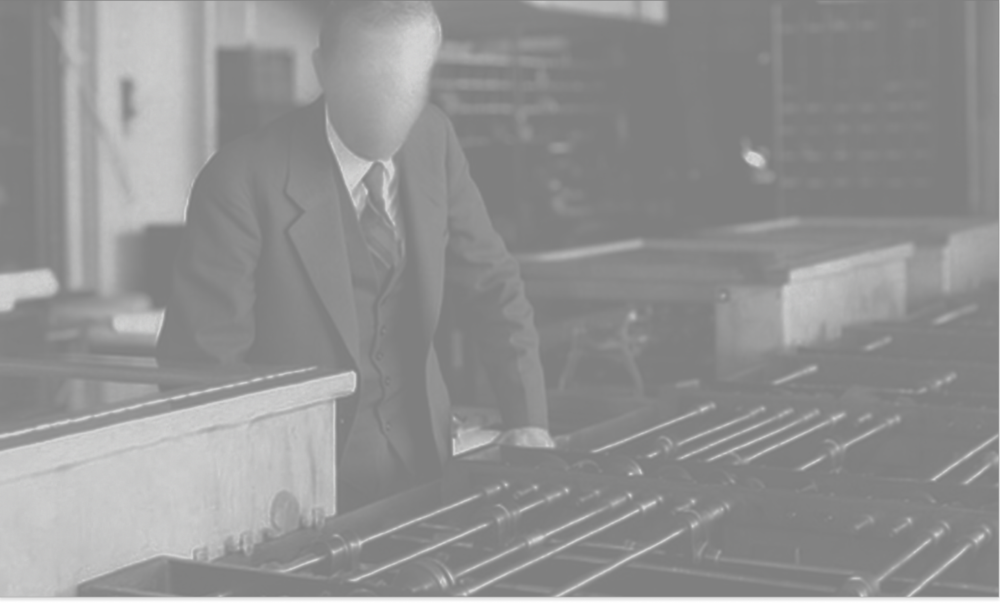
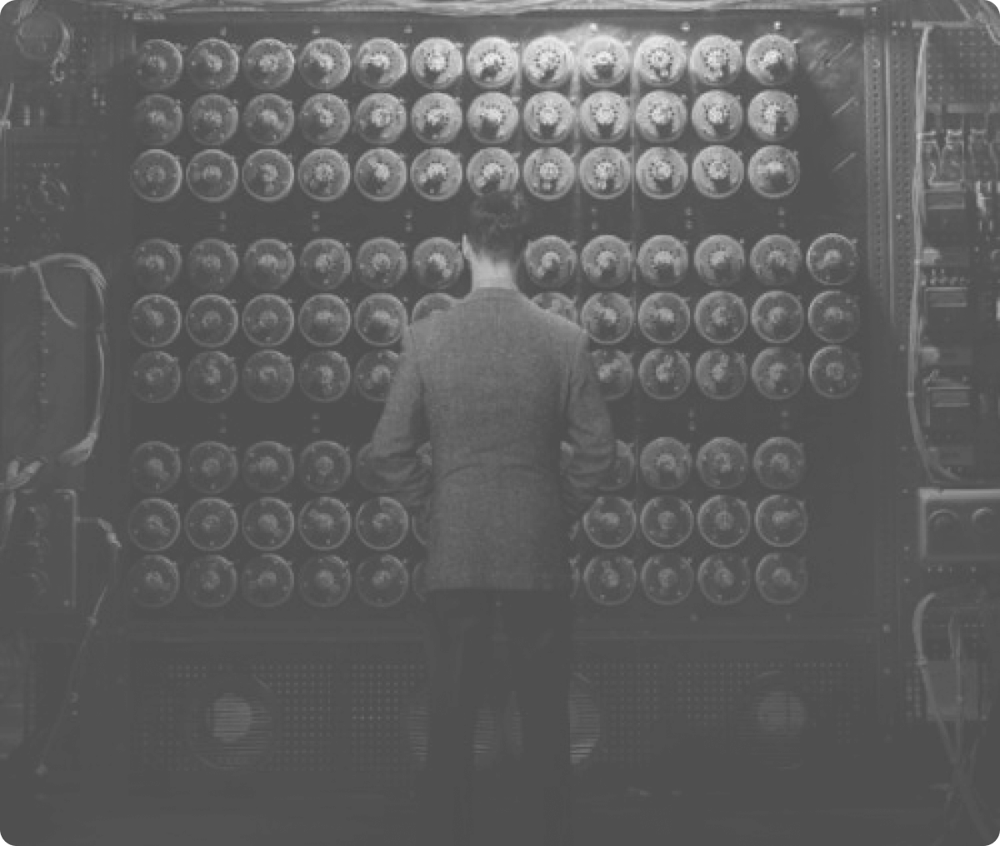
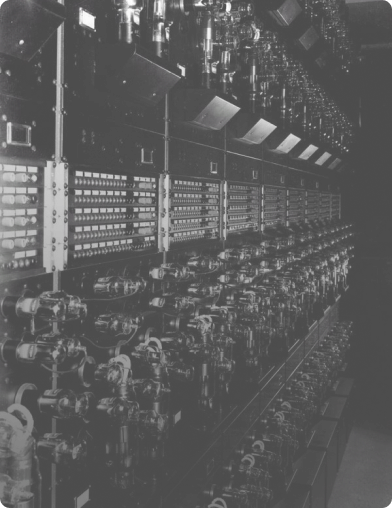
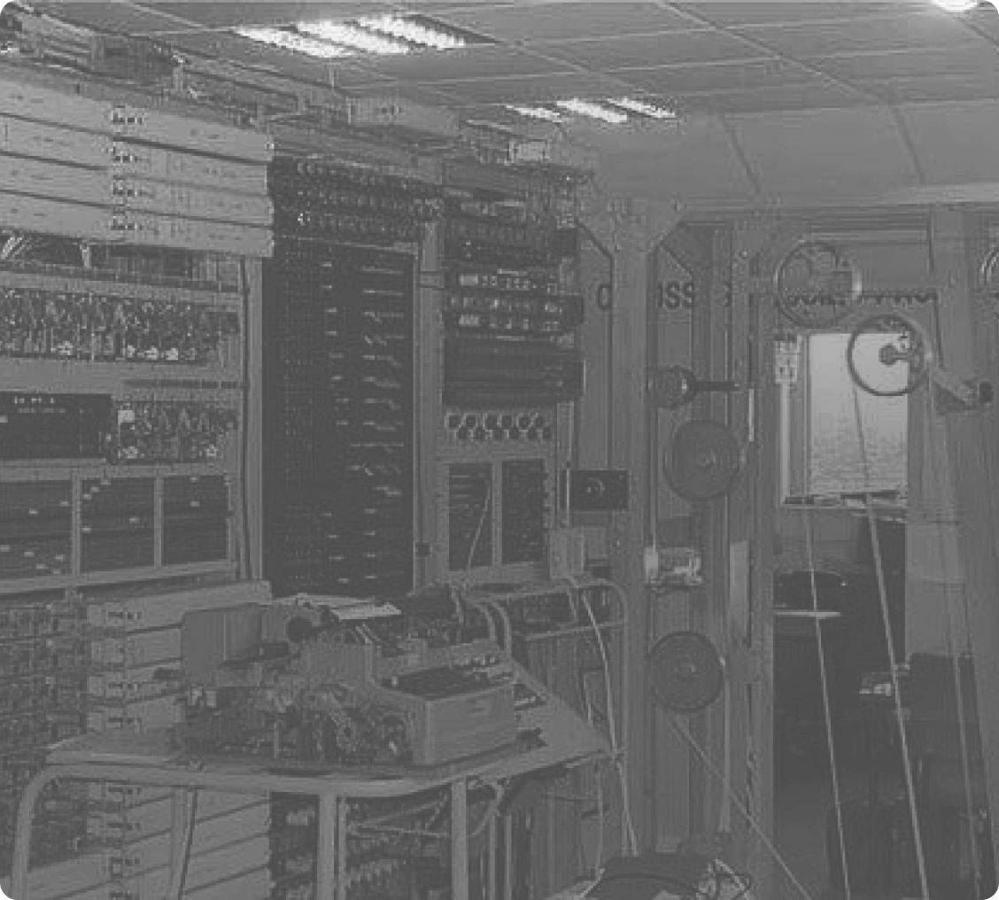

A cifra que guardava segredos de guerra e a máquina genial
criada para quebrá-la. Mergulhe na história da criptografia
nazista e da corrida para decifrá-la em Bletchley Park.

Uma versão aprimorada e mais poderosa do
analisador diferencial.

Criada por Vannevar Bush nos anos 1930, foi uma das pioneiras no uso
de circuitos e engrenagens para automatizar cálculos, abrindo caminho
para os computadores modernos.

O gigante eletrônico ultrassecreto. Veja como o Colossus foi
usado para decifrar as mensagens criptografadas do Alto
Comando Alemão, acelerando o fim da Segunda Guerra.